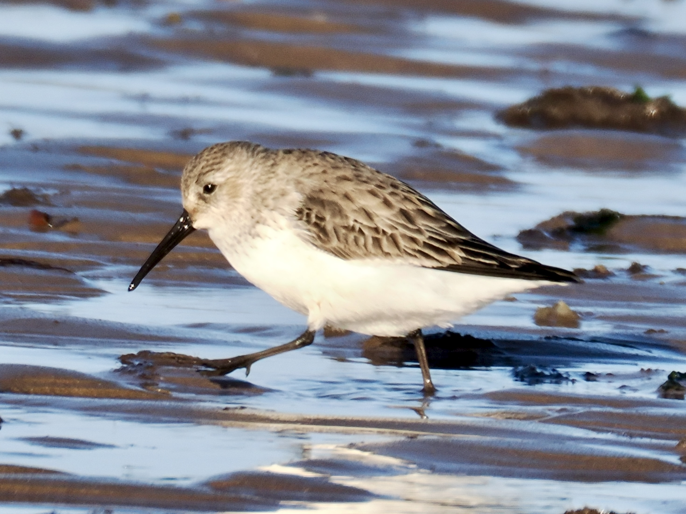
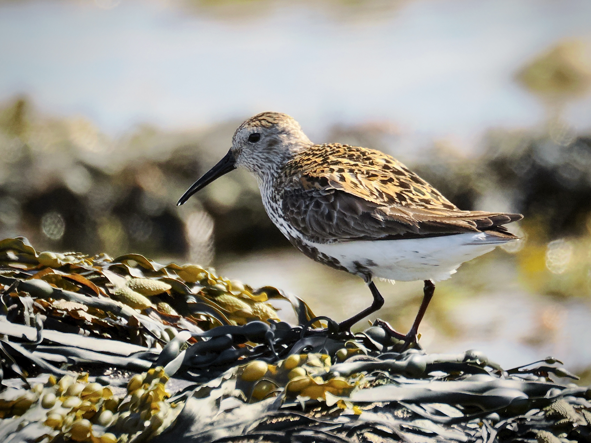

Dunlin
Calidris alpina
Order: Charadriiformes
Family: Scolopacidae

A small wader with a downcurved bill. In non-breeding plumage is found on the shore with a brown back and white underparts. Name originates from Old English dun, meaning brown, and the diminutive -ling. Another LBJ.

In breeding plumage has a black belly, and speckled back appears rufous or golden.